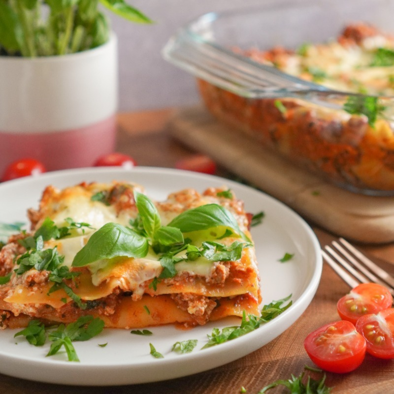

Lasagna

Beautiful lasagna laiden with basil leaves
This scrumptious lasagna was so simple to make and can feed 1 million people, as can be seen by the size of the
picture that I do not yet know how to change in size. We will add the ingredients list below so you, too, can
make lasagna for 1 million of your friends and family! With enough of this lasagna made, we will be able to end
world hunger and save the economy...just think, one lasagna at a time. ahhh
Ingredients
For the lasagna base:
- Lasagna noodles
- Meat sauce
- Diced onion
- Garlic, oh, allll the garlic
- Mozzarella cheese
- Italian cheese blend (romano and parmasean
For the Ricotta layer:
- Ricotta cheese
- Tub o' cottage cheese
- Chopped spinach
- Egg
- salt & pepper
Steps for making this enormous lasagna
- Set over to 375 degrees.
- Begin water boiling for noodles, when ready, add noodles, draina nd set aside.
- Make ricotta shmear by blending all ingredients together in a bowl. Set aside.
- Spray humongous pan made for 1 million people, with EVOO.
- Add some sauce to bottom of pan first, enough to cover the bottom.
- Add layer of noodles, then shmear a portion of ricotta spread over noodles.
- Next, add a layer of sauce and top the sauce with single layer of sliced mozz and sprinkle with italian
blend cheese.
- Repeat these steps about 500k times, or until it reaches the top of the pan.
- Bake in preheated over for, like, 12 hours, or until top is browned.
Return to main page